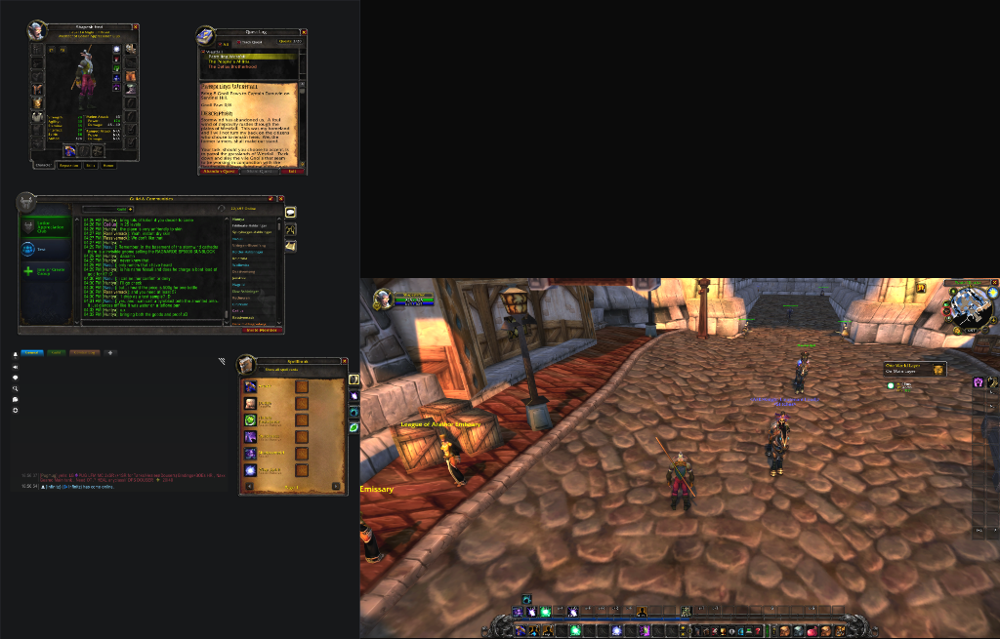

Two Displays. Zero Compromises. The O represents your 3D world portal — locking native FOV, action bars, player portrait, and minimap cleanly to your primary gaming display. Across the display bridge, the H unfolds into a 4-quadrant command deck — keeping your live GPS map, quest tracker, social chat, and inventory docks open continuously on your secondary screen.

Character Sheet, Quest Log, Guild Roster, Spellbook, and Chat open side-by-side on your vertical screen. Panels never push each other off-screen and never close when you start walking.
Clean, uncompromised 3D camera viewport. No horizontal fisheye stretching, centered camera angle, with action bars, unit frames, and minimap anchored right where your eyes expect them.
In standard World of Warcraft, spanning across two monitors forces your character directly behind the plastic monitor bezel and stretches your 3D camera into a nauseating horizontal fisheye.
Offhand uses custom trigonometric viewport coordinate transformations to isolate the 3D rendering pipeline to your gaming monitor. The O portal locks your camera to native aspect ratio, while the H deck transforms your secondary screen into a tactical command workstation.
Designed specifically for WoW players who run a secondary vertical or horizontal display alongside their main gaming rig.
Blizzard's default map closes the instant your character moves. Offhand keeps your World Map open continuously on your secondary screen as a real-time tactical GPS while navigating, questing, or flying.
Decouples frames from Blizzard's restrictive mutual-exclusion manager. Keep your Character Frame, Quest Log, Spellbook, and Bags open simultaneously on your command deck without closing one to view another.
Mathematically locks your 3D viewport to native 16:9 or 21:9 coordinates on your gaming monitor. Prevents the sickening horizontal stretch and camera distortion caused by raw desktop spanning.
Intercepts roll frames, raid warnings, level-up banners, and center screen alerts, routing them cleanly to the center of your gaming screen instead of being sliced in half by your monitor bezels.
Type /offhand wizard in-game. The built-in wizard inspects your physical resolution, recommends the ideal preset, and lets you align the bezel seam with a red alignment laser guide.
Built to look and feel like native World of Warcraft. Features authentic Blizzard dialog styling, classic gold borders, and five swappable themes including Classic Warcraft, Slate, and Gnomish Tinker.
No complex configuration required. Get up and running in under two minutes.
Search for Offhand in the CurseForge App, WowUp, or download it manually into your World of Warcraft\_classic_era_\Interface\AddOns\ directory.
With WoW set to Windowed mode, run the standalone Offhand.exe companion (or use Borderless Gaming / DisplayFusion) to stretch the window across both displays.
/offhand wizard
In chat, type /offhand wizard and click 1-Click Auto-Configure. Offhand snaps the 3D world to your gaming screen and opens your command deck.
Everything you need to know about safety, compatibility, and setup.
Yes, absolutely. The in-game addon is written entirely in standard World of Warcraft Lua using Blizzard's official frame management and viewport APIs. The desktop companion (Offhand.exe) is 100% open source, requires no installation, and simply calls standard Windows desktop positioning to size the borderless window. It contains zero memory reading, zero injection, and zero automation.
Yes. Offhand was specifically built to handle asymmetrical setups, such as a 1440x2560 vertical portrait monitor paired with a 2560x1440 curved gaming monitor, as well as matching dual landscape monitors. Different refresh rates (e.g. 144Hz + 60Hz) run smoothly in Windows borderless mode.
Yes! The Offhand addon only requires that the WoW window spans both physical screens. If you already use Borderless Gaming on Steam, DisplayFusion, or custom window managers, you don't even need our companion app — just span WoW and type /offhand wizard.
Offhand supports Classic Era (1.15.x), Season of Discovery, Hardcore, Cataclysm Classic, and modern Retail (The War Within). The core layout engine is compatible across all versions.